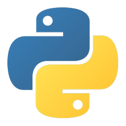
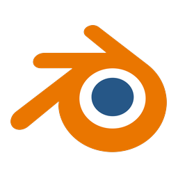
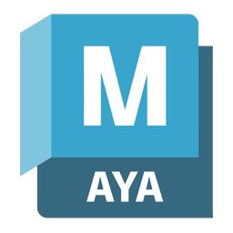
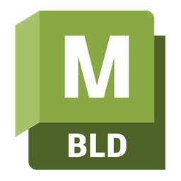

-
Junior Motion Capture Editor
Bones Studio·Full-time · Remote
Mar 2026 — Present · 9 mo
- Co-developed an internal tool, shaped by both my own experience and the team's actual needs
- Wrote scripts to take the load off the most tedious and problematic parts of the pipeline
- Revived legacy files and their skeletons
- Handled genuinely difficult sessions built around heavily occluded markers
-
3D Animator
Motion Buddies·Freelance · Remote
Sep 2024 — Jun 2026 · 1 yr 10 mo
- Animated custom MetaHuman characters, focusing on body acting and facial expressiveness
- Planned scene layouts and camera angles for stronger cinematic storytelling
- Built animation blockouts for key sequences, setting timing and poses
- Worked with a second animator to keep shots consistent and smoothly integrated
- Refined shots on senior animator feedback, raising overall quality
- Brought my own creative input to character performance and shot feel
Education
-
Collegium Da Vinci
Bachelor's degree·Game Development
Oct 2024 — Jun 2027 · Expected
-
CDV Accelerator
Startup acceleration programme·Collegium Da Vinci · 24 h
May — Jun 2025
- Six weeks of taking a game project apart as a product — what it is for, which piece of the technology actually carries the value, and how that case is made to people who fund the work rather than build it
- The same questions a humanoid locomotion result has to answer outside the lab, where a policy is judged by the task it finishes rather than by its reward curve
 Claude
Claude
Python- mjlab · MuJoCo Warp
I take a phone recording of a person doing physical work and turn it into a policy that performs the same task on a Unitree G1 in simulation. The interesting part is not the walking — it is everything the body does while carrying, swinging or placing something, where contact decides whether the motion holds.
five skills chained – Ladder · 18 s, single take
- Unitree G1 · Dex3 hands
- 18 s single motion
- mjlab · MuJoCo Warp · PPO
The G1 carries a ladder, unfolds it, climbs up, comes back down, folds it and carries it away — one continuous motion taken from a human recording.
The ladder has a hinge, so the object changes shape during the task — the robot manipulates it and then has to stand on something it unfolded itself. Across 18 seconds of continuous motion, errors from the early phases compound into the later ones.
A hinged object you then stand on
Two sections on one 0–40° hinge, platform coupled by constraint. A push unfolds it, lifting lets gravity fold it back.
Object reward, no contact reward
Pose and hinge angle tracked to 5 cm / 10° while the ladder stands. While it moves, only direction of displacement counts.
Four experts stitched into one motion
Carry-unfold, climb, descend, fold-carry at 50 Hz, blended over 10 frames, then PPO fine-tuning with BC regularisation so the earlier phases survive. ResMimic curriculum: 20 N guiding force annealed to zero.
Failures located frame by frame
The left foot caught the platform edge, so shin contact with that rung became its own penalty.
Result
[X]% full-motion success over [N] episodes, most common failure [phase]. One motion, one ladder.
passive hold tested by every impact – Pickaxe
- Two-handed Dex3 grip
- 2.1 s swing cycle
- 4800 parallel envs · PPO
The G1 digs with a physical pickaxe, held in both Dex3 hands, from a motion recorded off a person.
The tool is a free body held by nothing but contact forces. Every strike into the ground is an impulse that can knock the pickaxe straight out of the hands, so the grip has to survive the motion rather than be assumed by it.
The tool is invisible to the policy
A 0.715 kg free body with no observation of it. Keeping hold of it falls out of the learned motion, not out of being glued to the hand.
Grip solved, not posed
Optimised Dex3 pose where every finger segment touches the Ø35 mm shaft without penetrating it. Gaps under 4 mm, right hand mirrored.
Rewards describe the task, not the pose
Blade into the ground inside the strike window, with bonuses for swing height, shaft overhead and blade down. Penalties for shaft hits, head jerk and the hand sliding off.
Naturalness came from watching it back
Each run reviewed, then a penalty written for the specific cheat it found — wrist past 30°, right arm flared, forearm inverted.
Result
[X strikes per cycle, pickaxe retained in Y% of episodes]. Fingers stay locked in the grip pose, so this is a passive hold rather than dexterous manipulation.
each placement conditions the next – Bricks
- 4 bricks · 0.5 kg each
- 17-joint IK
- Reference and env ready
The G1 carries four bricks in pairs and lays them in an even row, reconstructed from a single phone recording.
In the source recording the person is carrying something else entirely, so there are no bricks in the data at all. The objects, their trajectories and the grip had to be built from scratch — and built so that they remain physically executable.
There are no bricks in the source data
The person on the recording carries something else entirely, so objects, trajectories and grip were built from scratch — and built to stay physically executable.
Objects derived from the hands
Brick size and placement taken from the grasp points, the line of the row fitted with PCA. Top grip optimised to 0 mm contact, waist and both arms solved with 17-joint IK against the brick.
Motion smoothed on purpose
Minimum-jerk transitions and Hermite splines, with jerk-penalised smoothing inside the grasp windows. Peak joint acceleration fell from 12.3 to 8.5 °/frame².
Status
Reference and environment are done — 0.5 kg bricks, a drop ends the episode, 10° placement tolerance. Training in physics is next.

Blender
Maya
MotionBuilder
I'm still working things out, and most of it happens inside the arc of a movement: where the weight sits along it, what the silhouette is doing while it travels. That's where character animation either holds together or starts to fall apart.
REUNION – LUMIS ENTERTAINMENT
- Fan Film
- Autodesk Maya
Fan film animated in the style of Arcane — stylized, graphic performance instead of realistic motion.
I built the base pass another animator worked on top of. That changes how you animate: keys have to be readable by someone else, timing has to be committed rather than vague, and the scene has to be clean enough to hand over without a conversation attached to every shot.
Animating for someone else to continue
My pass set the foundation: poses, timing and the structure of the shot. Work that another animator picks up has to be unambiguous — committed keys instead of soft approximations, a clean curve set, consistent naming. The goal was a handover where the next person adds polish instead of first reverse-engineering what I meant.
Precision through feedback
The frame-by-frame polish came out of a feedback loop rather than a single pass. Notes from the team sent shots back repeatedly, and each round narrowed in on smaller details — a contact frame, an overlap that fired too early, an eye line arriving a beat late. That rhythm of critique and revision is what taught me to look at my own work the way a reviewer does.
FRESZAKI – KAUFLAND
- Television advertisement
- Autodesk Maya
TV campaign for kids. Playful, easy-to-read mascot animation — the pass that guided the AI-driven production.
A kids' spot gives you no second look. Every pose had to read as a silhouette, every beat had to land before the cut. The animation was also the first stage of the pipeline, not a reference thrown over the wall — weight, overlap and eye direction had to be locked in by hand.
Reading in half a second
A kids' spot gives you no second look. Every pose had to read as a silhouette, every beat had to land before the cut, and the acting had to stay broad without turning sloppy. Clear anticipation, strong key poses and exaggerated timing do that work — the eye finds the character, understands the action, and moves on.
Hand-animated input for an AI pass
The animation was the first stage of the pipeline, not a reference thrown over the wall. Weight, overlap, eye direction and the small intention beats before each action are exactly what a generative pass cannot invent on its own, so they had to be locked in by hand. The AI stage inherited that performance rather than authoring it — the motion you see in the final film is the animated pass underneath.
Terror: Endless Night – UNSEEN SILENCE
- Cinematic trailer
- Autodesk Maya · Motion capture
Animation on custom MetaHuman characters, focused on body acting and facial expression, with scene layout and camera work planned for the cut.
Realistic human performance leaves no room for invention, so the work started before the keys: finding reference that actually matched the beat, and building it when no single clip did. Markerless capture turned that reference into something I could orbit and read in three dimensions instead of judging weight through someone else's camera.
Realistic humans leave no margin
MetaHuman characters are read as people, so anything slightly off registers immediately — a weight shift that lands late, a face that holds an expression a beat too long. Body acting and facial work had to stay grounded rather than pushed, which meant animating to what a real body does instead of to what reads well.
Building the reference, not finding it
The reference a shot needs rarely exists as one clip. Footage of real people gets you close, but the framing hides the weight shift or the timing is wrong for the beat, so I assembled reference instead: mechanics from one source, timing from another. Markerless capture turned the result into motion I could orbit and read from the angle the shot actually needed.
Just a Die – MEDWAY
- Game cutscenes
- Autodesk Maya
Cutscenes included in the game. Contributed to additional shots after a previous successful collaboration.
Created animation blockouts for key sequences, establishing timing and poses to guide final animation. Worked closely with a second animator to ensure consistency, quality and smooth integration of shots.
Blockouts for the key sequences
I set timing and poses for the main beats, establishing the structure the final animation was built on. Blockout work decides most of a shot: once the beats land and the staging reads, polish becomes refinement rather than rescue.
Two animators, one look
Working alongside a second animator meant agreeing on how the characters move before splitting the shots — matching weight, pacing and the level of exaggeration so the sequences cut together without a visible seam between our passes.
Just a Die – MEDWAY
- Game trailer
- Autodesk Maya
Launch trailer for the game's Steam page — character performance carrying the cut, refined through rounds of senior review.
Focused on character performance and storytelling throughout the trailer. Refined shots based on external feedback from senior animators, improving overall animation quality and consistency. Applied personal creative input to enhance character performance and cinematic storytelling.
Performance carries the trailer
A trailer has to sell a game in under a minute, so every shot had to say something about the character rather than just move them through the frame. I pushed the acting choices — hesitation before an action, where the eyes go, what the body does between beats — to keep the cut telling a story.
Notes from senior animators
Shots went through review with more experienced animators and came back with corrections. Reworking them that way raised the consistency across the trailer and made clear which of my instincts held up under scrutiny and which were habits worth dropping.